MILIASTRA WORKSHOP / EPISODE 06Build a Two-Minute Challenge
A native 120-second Player Global Timer, guarded Start button, active-only pickups and natural success/failure settlement.
Keep timer definition, running Player entity and Timer UI source aligned. RoundStarted guards accepted starts; RoundActive gates awards and closes before settlement. Check the actual Start layout-instance Index. Test pre-start pickup, repeat Start, natural success, retry and natural failure. Main course uses no Lua.
00:3901. What the Global Timer provides
The Global Timer has a definition, an entity that runs it, and an optional interface display. Timer Management defines its name and duration. Our Player carries the running timer. The Timer control shows that Player's time. Keeping those three roles connected prevents a countdown on one entity and a display reading another.
Official guide: Concept Introduction / Functions / Common Components / Global Timer
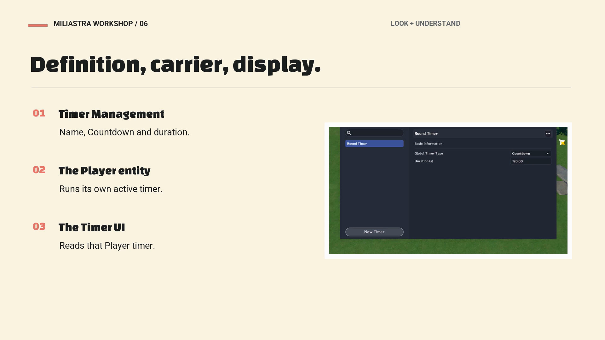
00:5802. Define Round Timer
System Menu → Timer Management → New Timer. Set Countdown, Duration120.00seconds and a recognizable name; this recording uses Round Timer. The timer name is the graph reference. The actual recorded setup sets the duration and then completes the rename; the resulting definition is read back.
Official guide: Concept Introduction / Functions / Common Components / Global Timer
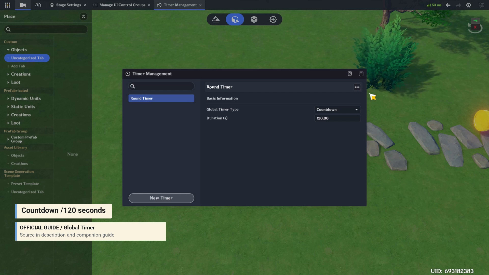
01:2803. Add the native Timer control
In Manage UI Control Groups, open Default Layout. Choose Add UI control, then Prefabricated Template, then Timer. Open its Functions settings. Change Type to Countdown and choose Round Timer. This filters the list to the matching timer type. Leave room around the existing coin bar and original game controls.
Official guide: Concept Introduction / Assets / UI Controls / Timer UI Controls
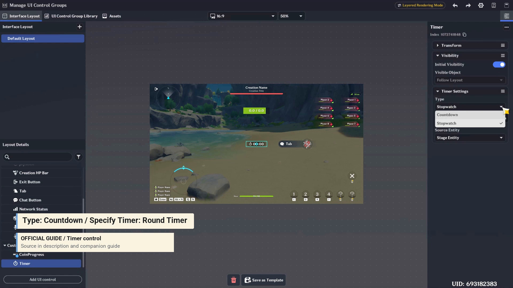
01:5804. Read time from Player Themself
Change Source Entity from Stage to Player Themself. Our controller will start the timer on that Player. The official Global Timer guide explains that an inactive timer displays zero minutes and zero seconds. That initial display doesn't mean a fresh two-minute run has already ended. It can mean the timer hasn't been activated yet.
Official guide: Concept Introduction / Assets / UI Controls / Timer UI Controls
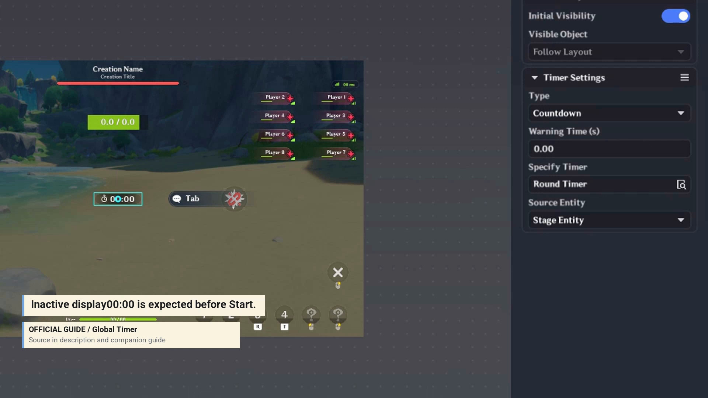
02:1705. Choose deliberate activation
Default Player → Edit Player → Components. If Global Timer is absent, Add Common Component → Global Timer, then open Advanced Editing. Leave its timer-reference list empty for this deliberate-start design. A timer referenced in the component activates when the entity is created. Start Global Timer in the graph activates it after the accepted Start request.
Official guide: Concept Introduction / Functions / Common Components / Global Timer
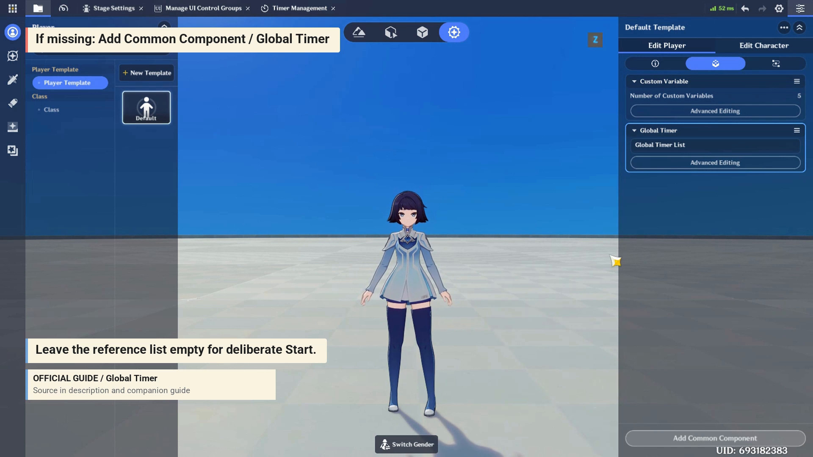
03:2508. Give the Player two Boolean flags
Add two predefined standard Boolean variables to Default Player: RoundStarted and RoundActive, both No. RoundStarted remembers that this challenge instance has accepted a start request. RoundActive says whether pickups are currently allowed. They have different jobs. At the end we'll turn Active off while Started stays Yes, so another press can't restart this run.
Official guide: Concept Introduction / Functions / Common Components / Custom Variables
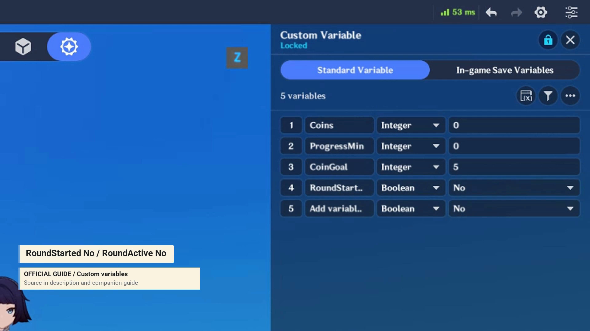
03:4909. Mount the controller on the Player
Create a Server Entity Node Graph and mount EP06 Round Controller on Default Player, not on its Character or a coin. The UI interaction event is only received by the Player graph. Get Self Entity therefore supplies the Player target here.
Official guide: Node Introduction / Server Nodes / Event Nodes
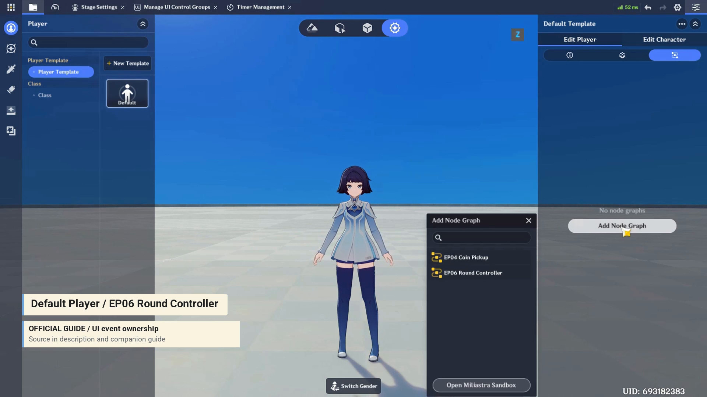
04:1210. Check which control sent the event
A minimal When UI Control Group Is Triggered → Print String probe converts its UI Control Group Index to String. Actual native Log readback1073741849 matches this save Start instance. Use your own actual instance ID; replacing the layout instance requires updating the comparison.
Official guide: Node Introduction / Server Nodes / Event Nodes
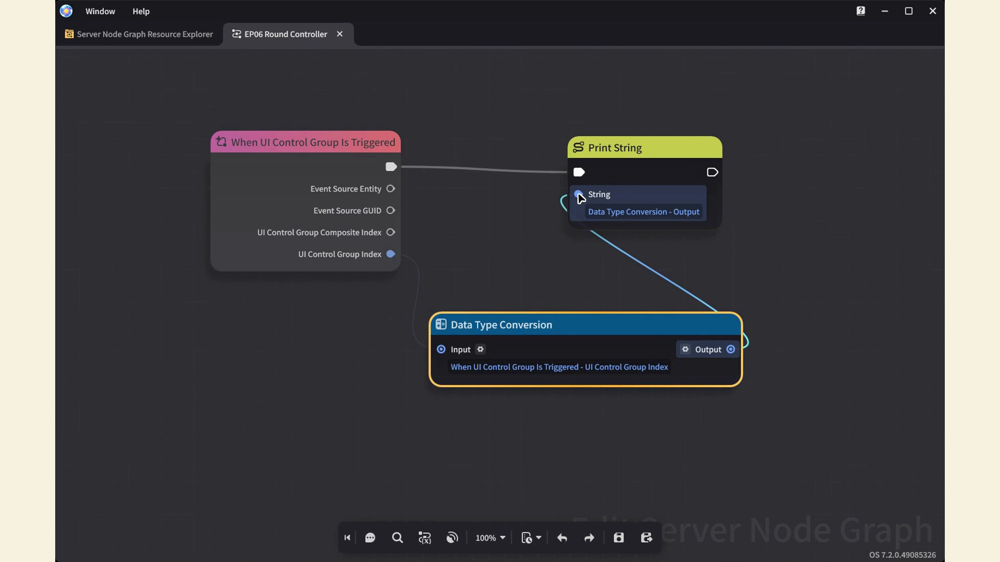
04:3611. Accept only the Start instance
In the working controller, compare the event's UI Control Group Index with the Start instance Index using an Integer comparison. Feed that result into Double Branch and continue from Yes. Other interface interactions should stop here. Use Get Self Entity for this graph's Player, and keep that target consistent through the start actions.
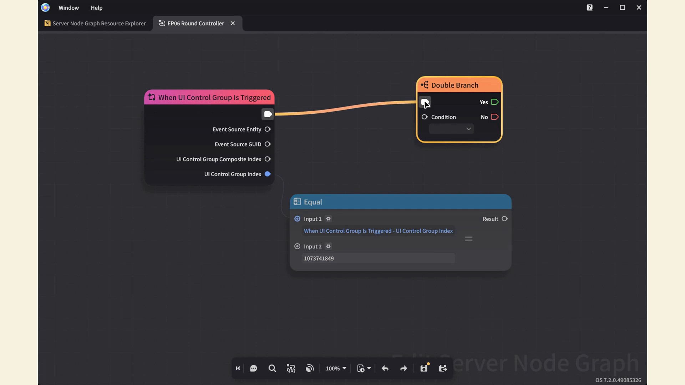
04:5712. Ignore repeated start requests
Event Index matches Start → RoundStarted Boolean No → Set RoundStarted Yes → Set RoundActive Yes → Start Global Timer(Self, Round Timer) → Print round started. The guard prevents later requests from restarting the run.
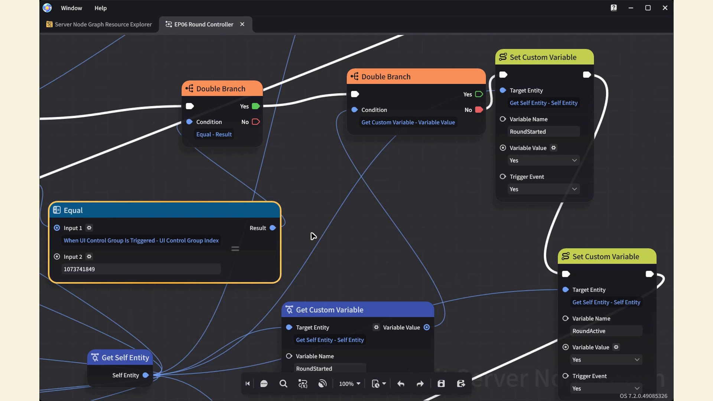
05:1813. Start the predefined timer
Continue to Start Global Timer, target Self, and enter Round Timer as the Timer Name. Finish this small chain with Print String, using round started as its message. Save the graph and scene. We're starting the predefined Global Timer here, so choose that node rather than the separate interval-based Start Timer system.
Official guide: Concept Introduction / Functions / Common Components / Global Timer
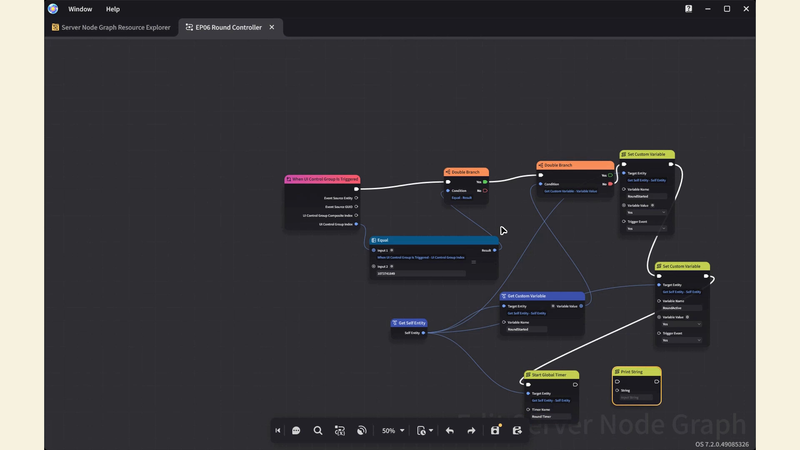
05:3714. Gate the coin award with RoundActive
In the coin graph, resolve Entering Entity to the affiliated Player. Read that Player RoundActive Boolean. The event execution enters this new Double Branch, and only Yes reaches the original PickedUp gate and award chain. Remove the old execution bypass. No leaves the coin untouched.
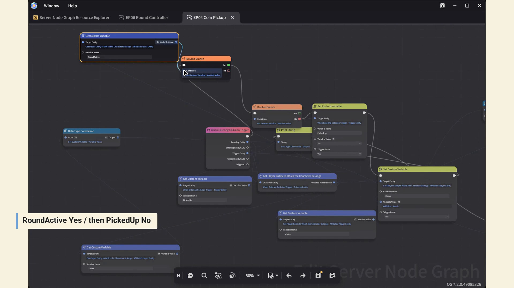
06:0015. Listen for this countdown reaching zero
Return to the Player controller and add When Global Timer Is Triggered. Compare its Timer Name with Round Timer, then continue only from Yes. This event is the countdown reaching zero. The name check keeps our result chain specific if another Global Timer is added to the project later.
Official guide: Node Introduction / Server Nodes / Event Nodes
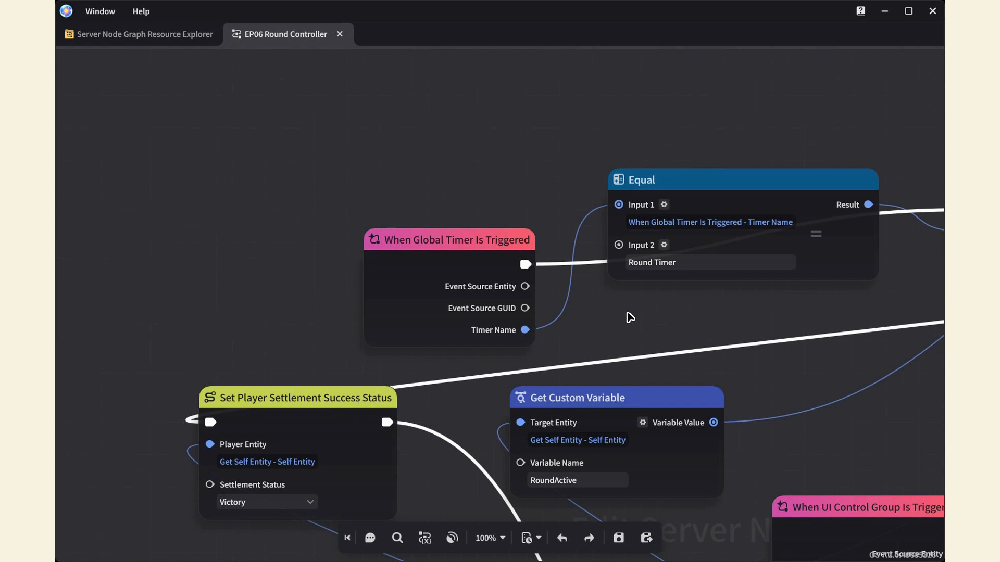
06:1616. Close pickups before choosing the result
When Global Timer Is Triggered → Timer Name equals Round Timer → Self RoundActive Yes → Set RoundActive No FIRST. Then compare Coins>=CoinGoal as Integers and select one outcome path.
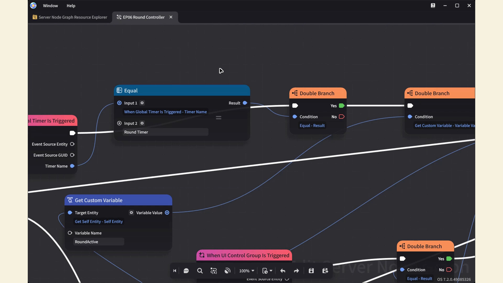
06:3417. Compare the count with the goal
Read Self's Coins and CoinGoal as Integers. Compare Coins greater than or equal to CoinGoal and feed the Boolean result into Double Branch. Our goal is five. Reusing the goal from the progress bar keeps its full value and the challenge rule aligned. We don't need a particular tree position or a pavilion trigger for this objective.
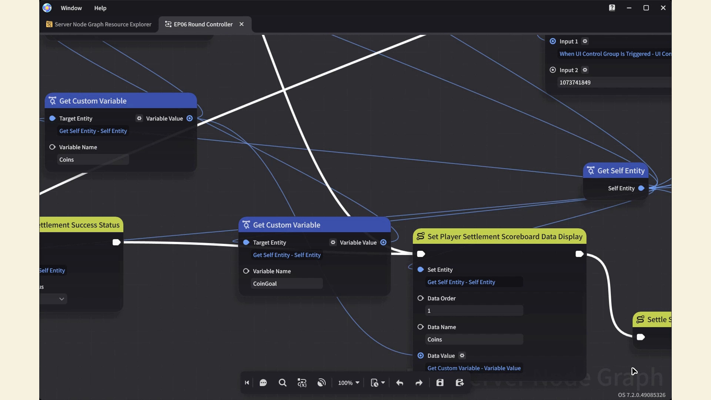
06:5418. Set the Player result on each path
Yes uses Set Player Settlement Success Status(Self, Victory); No uses the native failure option, labelled Failed in this client. Prepare Scoreboard order1, name Coins, fresh Get Self Coins as value, then Settle Stage. Both branch outputs may converge on the common score/settlement actions; only the selected execution path runs.
Official guide: Node Introduction / Server Nodes / Execution Nodes
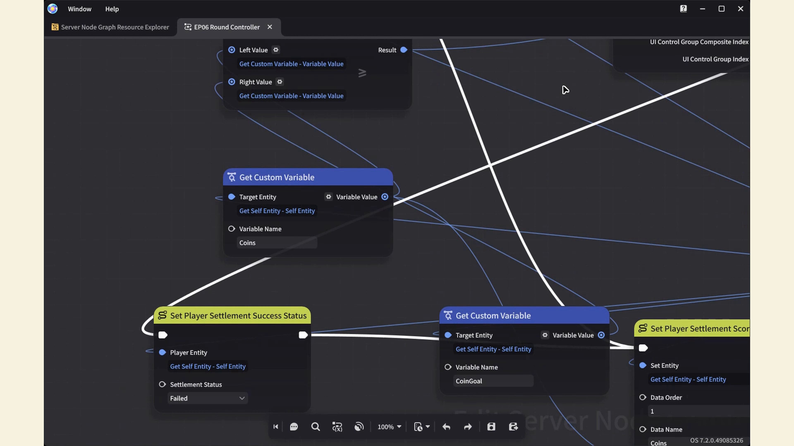
07:1919. Prepare the visible Coins score
After the status node on each path, add Set Player Settlement Scoreboard Data Display. Target Self, use data order one, enter Coins as the name, and supply a fresh read of the Player's current Coins value. That is the score we want the result card to display. The HUD binding alone doesn't create this settlement entry.
Official guide: Node Introduction / Server Nodes / Execution Nodes
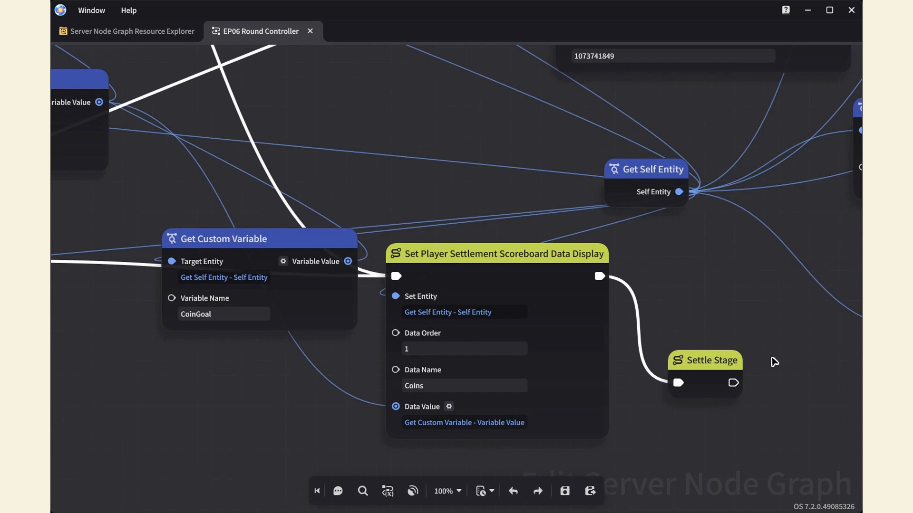
07:3820. Finish with Settle Stage
Continue each selected path to Settle Stage. Setting a success status and score prepares the information; this final action starts the stage settlement process. Save both the graph and editing scene. Read the end chain once: correct timer, active run, close pickups, compare goal, set status and score, then settle.
Official guide: Node Introduction / Server Nodes / Execution Nodes
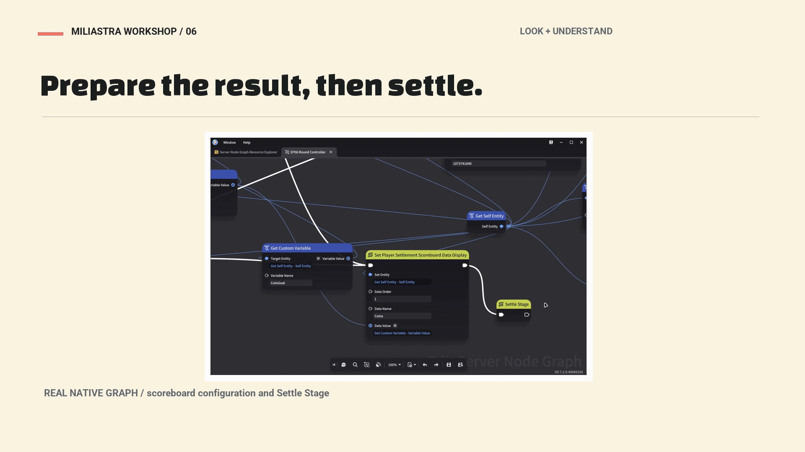
08:0021. Test before pressing Start
Start a fresh private test and leave Start untouched. The coin bar is empty and the timer is inactive at zero. Walk through the first coin. In our test it remains, with the counter still at zero. This checks that the new gate is connected before the old award chain, rather than sitting beside a working bypass.
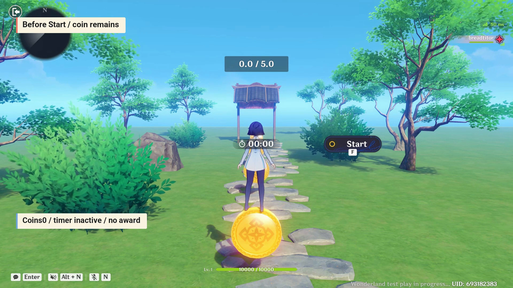
08:1822. Start and check the live clock
Return to the starting area and press F. The timer begins its two-minute countdown, and coins can now be collected. In a separate start check, I press F again while the clock is running. It continues counting down instead of jumping back to two minutes. RoundStarted is what protects that accepted start path.
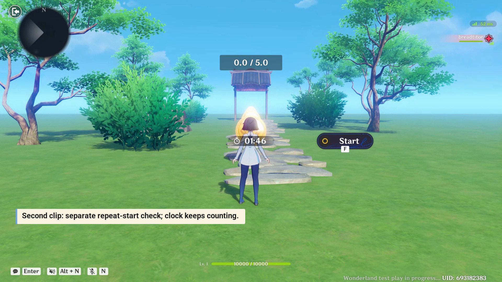
08:3923. Collect five and let time expire
The complete original recording retains a full natural120-second winning countdown and a second full natural120-second zero-coin countdown in the same capture, including the retry. The tutorial removes waiting and labels those cuts. Five coins give Victory/Coins5; zero gives Failed/Coins0. The repeated-Start test is from a separately identified start-check clip.
09:0324. Retry creates a fresh challenge
Choose Retry Challenge. Check the coins, the empty bar and the inactive timer before starting again. Our new instance has zero Coins and no active countdown. Pressing F begins a new run. Checking this starting state matters, because a correct first run can still hide an incorrect retry or initialization path.
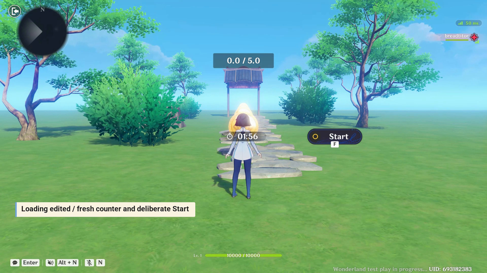
09:2325. Check the other result
This time, leave the coins alone and wait through another complete two-minute countdown. At zero, the result is Failed, with Coins, zero. The waiting is shortened in the edit again. A winning test checks one branch; this second natural run checks the other result using the same timer and settlement rule.
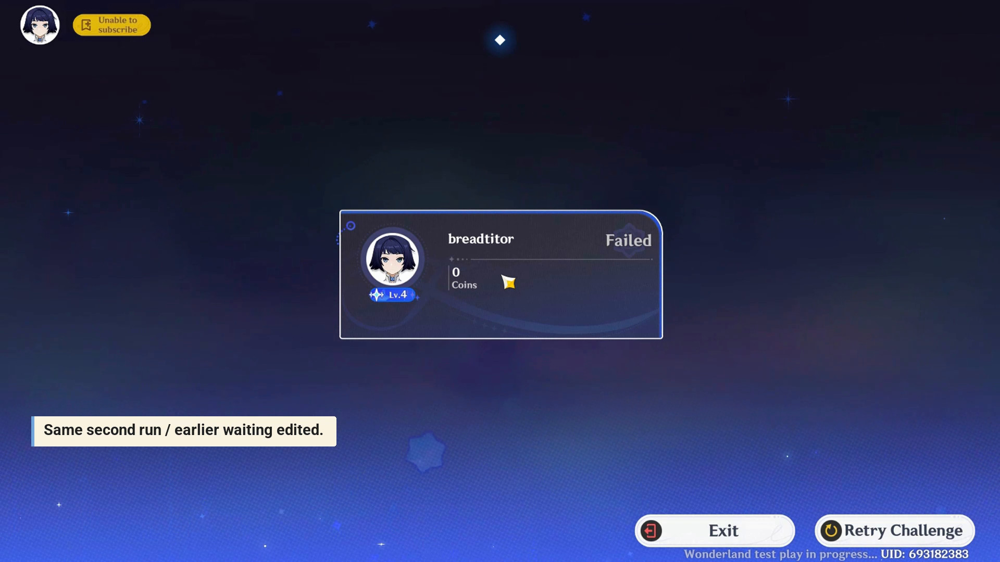
09:4526. Trace a timer problem by role
If the clock stays at zero, check the timer definition, the Player component, the UI's Player source, and the Start event in that order. If it starts too soon, inspect the component's timer references. If pickups happen before Start, follow the event's white execution line and look for a route around RoundActive.
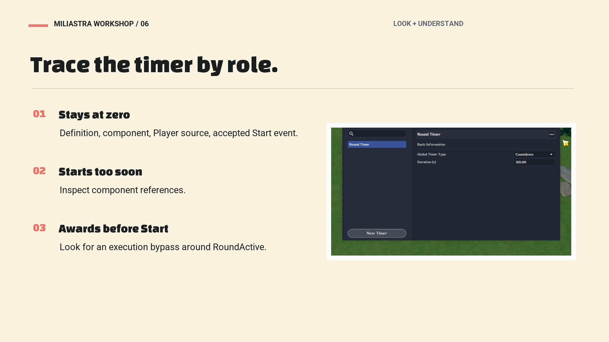
10:0427. Check the full challenge loop
These are bounded single-player checks on this exact R06 save. No multiplayer, mobile/controller layout or same-tick race-condition stress test is claimed. The later read-only detail session was discarded at its unsaved-data prompt, leaving the saved tested R06 and its exported file unchanged.
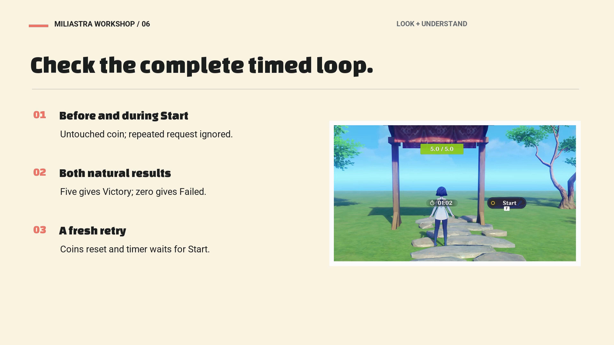
Official references
These explanations use our own words. Native interface labels are shown in the images. A short test covers the actions shown; test the important systems in your own version after changes.